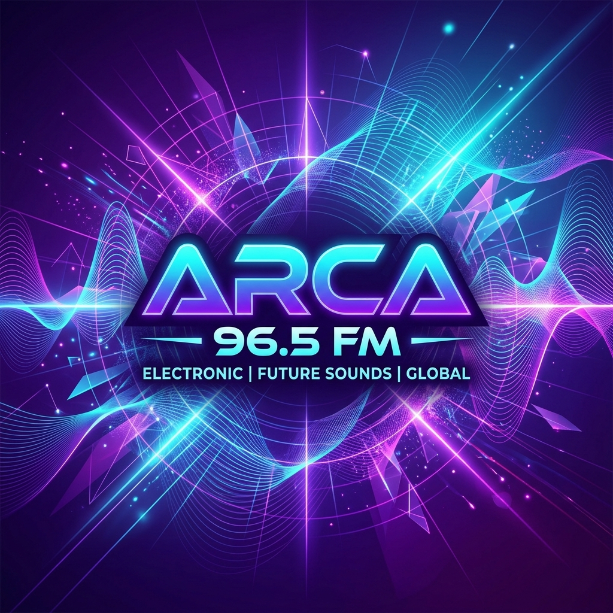
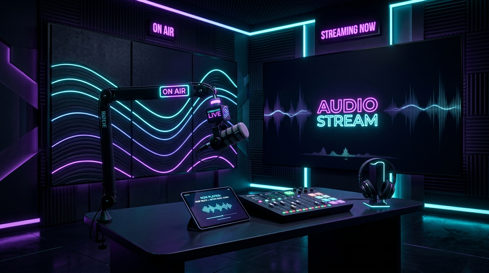

ARCA 96.5 FM
Pop / Electronic / Live
1.250
ARCA 96.5 FM
La Noche en ARCA

La Noche en ARCA
Encuentra una frecuencia para cada momento.
Pop / Electronic / Live

Pop / Hits
892 oyentesRitmos Latinos
654 oyentesAlternativo
423 oyentesLo-Fi / Ambient
318 oyentes22:00 — 00:00
Un viaje sonoro nocturno con lo mejor del pop electrónico y sesiones exclusivas en vivo.
Ideas que dan forma a nuestra identidad sonora.
Somos más que oyentes. Somos una red de personas conectadas por el sonido.
Cada frecuencia es una nueva experiencia esperando ser explorada.
Tecnología y música se fusionan para crear experiencias únicas.
Es un espacio donde las voces, la música y las comunidades encuentran una manera de conectarse.
Contenido audiovisual en vivo y bajo demanda.
Programas y podcasts bajo demanda.
Documental
42 minEntrevistas
58 minMúsica
35 minTecnología
28 minUna plataforma construida por y para la comunidad.
Conectar incluso cuando Internet no esté.
En el futuro ARCA podría explorar tecnologías que permitan comunicación local entre dispositivos para mantener conectadas a las comunidades incluso sin Internet convencional.
El sonido que te acompaña.